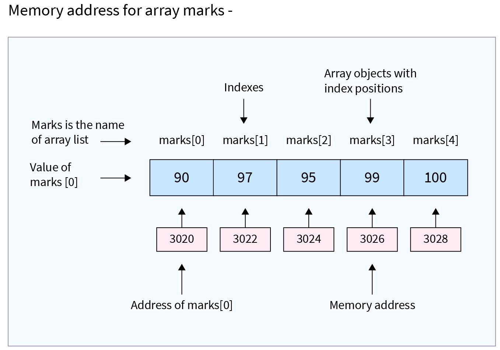
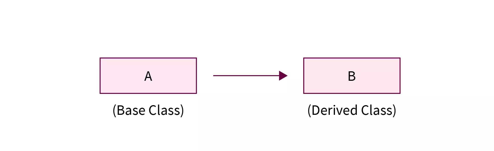
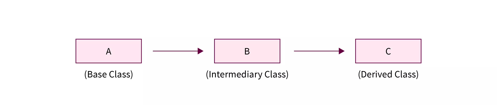
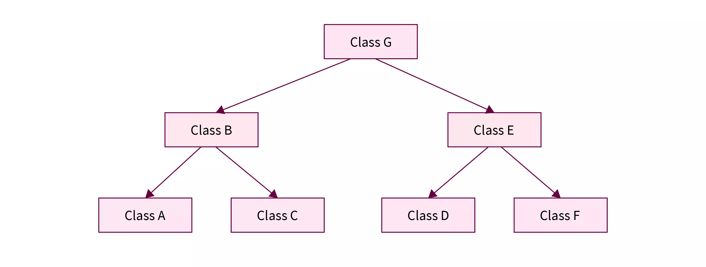
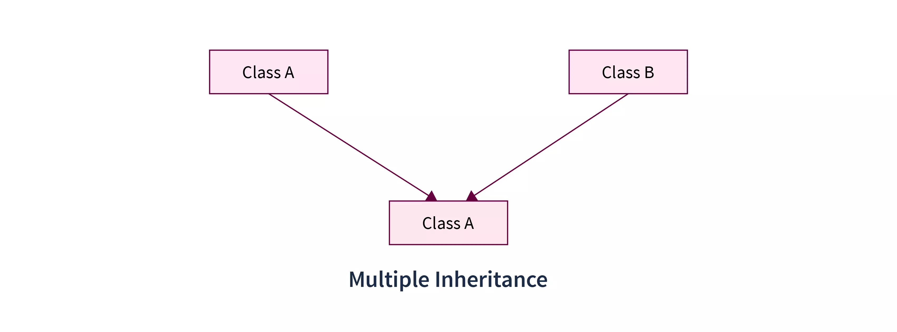
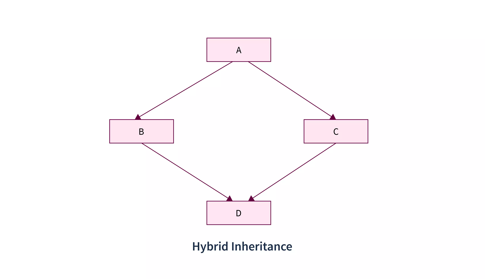
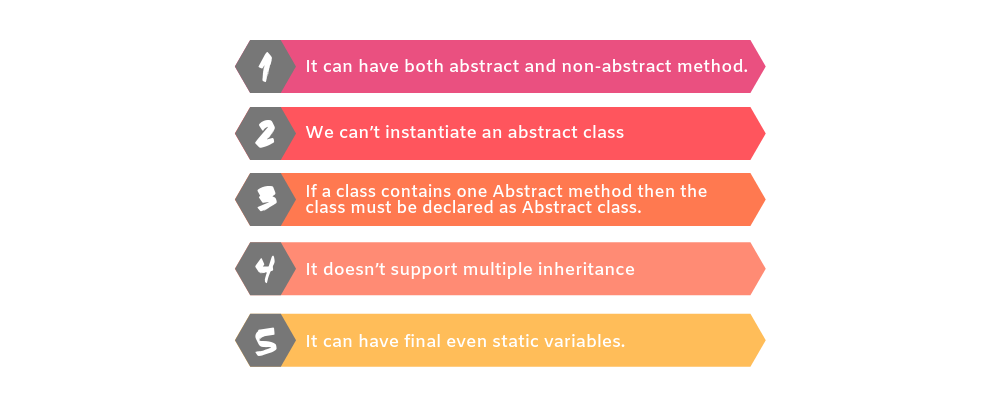

01: Class Variable
02: Method With Parameters
03: Methods With Return Type
04: Method Overloading
05: Passing Object as Parameter
05.01: Static Fields and Methods
06: Array
06.01 Array Size Through Input
06.01 Example
06.01 Reusing Array Variable
06.01 Array Length
07: 2-D Array
07.01: for-each Loop
07.02: Passing Array to the Method 07.03: How to Return an Array 08: Command Line Argument
09: Inheritance
09.01: Single Inheritance
09.02: Multilevel Inheritance
09.03: Hierarchical Inheritance
09.04: Multiple Inheritance
09.05: Hybrid Inheritance
10: Abstract Class
11: Polymorphism
11.01: Method Overloading
12: Operator Overloading
13: Super
14: Questions
Class Variable
- All variables are also known as instance variable.
- This is because of the fact that each instance or object has its own copy of values for the variables.
- Hence other use of the "dot” operator is to initialise the value of variable for that instance
Method With Parameters
class prg {
int n,n2,sum;
public void take(int x,int y) {
n=x; n2=y;
}
public void sum() {
sum=n+n2;
}
public void print() {
System.out.println("The Sum is"+sum);
}
}
class prg1 {
public static void main(String args[]) {
prg obj=new
prg();
obj.take(10,15);
obj.sum();
obj.print();
}
}
Methods With Return Type
- When method return some value that is the type of that method.
- For Example: some methods are with parameter but that method did not return any value that means type of method is void. And if method return integer value then the type of method is an integer
class Demo1 {
int n, n2;
public void take(int x, int y) {
n = x;
n = y;
}
public int process() {
return (n + n2);
}
}
class prg {
public static void main(String args[]) {
int sum;
Demo1 obj = new Demo1();
obj.take(15, 25);
sum = obj.process();
System.out.println("The sum is" + sum);
}
}
Method Overloading
- Method overloading means method name will be same but each method should be different parameter list.
class prg1 {
int x = 5, y = 5, z = 0;
public void sum() {
z = x + y;
System.out.println("Sum is " + z);
}
public void sum(int a, int b) {
x = a;
y = b;
z = x + y;
System.out.println("Sum is " + z);
}
public int sum(int a) {
x = a;
z = x + y;
return z;
}
}
class Demo {
public static void main(String args[]) {
prg1 obj = new prg1();
obj.sum();
obj.sum(10, 12);
System.out.println(+obj.sum(15));
}
}
Passing Object as Parameter
class para123 {
int n, n2, sum, mul;
public void take(int x, int y) {
n = x;
n2 = y;
}
public void sum() {
sum = n + n2;
System.out.println("The Sum is" + sum);
}
public void take2(para123 obj) {
n = obj.n;
n2 = obj.n2;
}
public void multi() {
mul = n * n2;
System.out.println("Product is" + mul);
}
}
class DemoPara {
public static void main(String args[]) {
para123 ob = new para123();
ob.take(3, 7);
ob.sum();
ob.take2(ob);
ob.multi();
}
}
Static Fields and Methods
- A static data field does not belong to any one object
- Also called a class variable
- Only one instance of the variable exists for all instances of the class
- Note that a static data field is not a constant (final)
All instances of the class reference that one variable
-
Consider the need of a method that does not belong to an object of any type
- Examples
- A method to find the max or min of two or more numbers
- A square root method
-
When specified static, a method is still a member of the class
- However, does not need an object as a prefix to the call
-
Call with the name of the class
int maximum = Math.max(2, 3);double root = Math.sqrt(4.2);
this keyword in Java
-
thisis a reference variable that refers to the current object.
//Java code for using 'this' keyword to
//refer current class instance variables
class Test {
int a;
int b;
// Parameterized constructor
Test(int a, int b) {
this.a = a;
this.b = b;
}
void display() { //Displaying value of variables a
and b
System.out.println("a = " + a + " b = " +
b);
}
public static void main(String[] args) {
Test object = new Test(10, 20);
object.display();
}
}
Array

- Array is collection of related data items
-
Declaring an Array:
- Do not have to create an array while declaring array variable
<type> [ ] variable_name;Double[ ] myList;double myList[ ];
- Both syntaxes are equivalent
No memory allocation at this point
-
Defining an Array:
variable_name=new <type>[arraySize];Number = new int[5];Mylist = new int[10];-
It creates an array using new
dataType[arraySize]; -
It assigns the reference of the newly created array to the
variable
variable_name dataType array_name[ ] = {list of values};Int a [ ]={1,2,3,4,5,6,7,};- Array index starts from 0 to arraySize-1
Array Size Through Input
import java.io.BufferedReader;
import java.io.InputStreamReader;
public class ArraySizeInput {
public static void main(String[] args) throws Exception {
BufferedReader stdin = new BufferedReader(new InputStreamReader(System.in));
String inData;
int num;
System.out.print("Enter a Size for Array:");
inData = stdin.readLine();
num = Integer.parseInt(inData);
long[] primes = new long[num];
System.out.println("Array Length = " + primes.length);
}
}
// OUTPUT
// Enter a size for array: 4
// Array Length = 4
Example
public class TestArray {
public static void main(String[] args) {
double[] myList = {
1.9,
2.9,
3.4,
3.5
};
// Print all the array elements
for (double element: myList) {
System.out.println(element);
}
}
}
// OUTPUT
// 1.9
// 2.9
// 3.4
// 3.5
Reusing Array Variable
long[] primes = new long[20];
primes[0] = 2;
primes[1] = 3;
System.out.println(primes[0]);
System.out.println(primes[1]);
// Output:
// 2
// 3
Array Length
- Refer to array length using
length()method - If number of elements in the array are changed, JAVA will automatically change the length attribute!
long[ ] primes = new long[20];
System.out.println(primes.length);
// OUTPUT
// 20
public class MinArray {
public static void main(String[] args) {
int[] array = { 20, 19, 1, 5, 71, 27, 19, 95 };
int min = array[0];
for (int index = 1; index < array.length; index++) {
if (array[index] < min) {
min = array[index];
}
}
System.out.println("The minimum of this array is: " + min);
}
}
2 Dimensional Array
-
Representing 2D arrays
Int myarray[][];Myarray = new int[3][4];Int myarray [][] = new int[3][4];
-
Example
-
Int myarray[2][3]={0,0,0,1,1,1};2 columns and 3 rows
-
for-each Loop
- The Java for-each loop or enhanced for loop is introduced since J2SE 5.0.
- It provides an alternative approach to traverse the array or collection in Java.
- It is mainly used to traverse the array or collection elements.
- The advantage of the for-each loop is that it eliminates the possibility of bugs and makes the code more readable.
- It is known as the for-each loop because it traverses each element one by one.
- The Java for-each loop traverses the array or collection until the last element. For each element, it stores the element in the variable and executes the body of the for-each loop.
for(data_type variable : array | collection) {
//body of for-each loop
}
Passing Array to the Method
- Arrays can be passed to other methods just like how you pass primitive data type’s arguments.
- To pass an array as an argument to a method, you just have to pass the name of the array without square brackets.
-
The method prototype should match to accept the argument of the
array type.
void method_name (int [] array); -
This means
method_namewill accept an array parameter of typeint. So if you have an int array namedmyarray, then you can call the above method as follows:method_name (myarray);
How to Return an Array
- Apart from all the primitive types that you can return from Java programs, you can also return references to arrays.
- While returning a reference to an array from a method, you should keep in mind that:
- The data type that returns value should be specified as the array of the appropriate data type.
- The returned value from a method is the reference to the array.
- The array is returned from a method in the cases where you need to return multiple values of the same type from a method.
- This approach becomes useful as Java doesn’t allow returning multiple values.
Command Line Argument
- The java command-line argument is an argument i.e. passed at the time of running the java program.
- The arguments passed from the console can be received in the java program and it can be used as an input.
- So, it provides a convenient way to check the behaviour of the program for the different values.
- You can pass N (1,2,3 and so on) numbers of arguments from the command prompt.
class CommandLineExample {
public static void main(String args[]) {
System.out.println("Your first argument is: " + args[0]);
}
}
- Compile >
javac CommandLineExample.java - Run >
java CommandLineExample sonoo - Output >
Your first argument is: sonoo
Inheritance
- Inheritance is an important pillar of OOP(Object Oriented Programming). It is the mechanism in java by which one class is allow to inherit the features(fields and methods) of another class.
- Super Class: The class whose features are inherited is known as super class(or a base class or a parent class).
- Sub Class: The class that inherits the other class is known as sub class(or a derived class, extended class, or child class). The subclass can add its own fields and methods in addition to the superclass fields and methods.
- Reusability: Inheritance supports the concept of “reusability”, i.e. when we want to create a new class and there is already a class that includes some of the code that we want, we can derive our new class from the existing class. By doing this, we are reusing the fields and methods of the existing class.
- The keyword used for inheritance is
extends.
class derived-class extends base-class {
//methods and fields
}
Single Inheritance

class A {
int x, y;
void getdata(int a, int b) {
x = a;
y = b;
}
int add() {
System.out.println(“Superclass Method”);
return (x + y);
}
}
class B extends A {
int mult() {
System.out.println(“Sub - class Method”);
return (x * y);
}
}
class Test {
public static void main(String args[]) {
B obj = new B();
int add, mult;
obj.getdata(5, 3);
add = obj.add();
mult = obj.mult();
System.out.println(“Addition” + add);
System.out.println(“Multiplication” + mult);
}
}
Multilevel Inheritance

class one {
public void print() {
System.out.println(“hi ");
}
}
class two extends one {
public void print1() {
System.out.println(“hello ");
}
}
class three extends two {
public void print2() {
System.out.println(“hi ");
}
}
// Drived class
public class Main {
public static void main(String[] args) {
three g = new three();
g.print();
g.print1();
g.print2();
}
}
Hierarchical Inheritance

class One {
int x = 10, y = 20;
void disp() {
System.out.println(“Method of class One”);
System.out.println(“Value of X” + x);
System.out.println(“Value of Y” + y);
}
}
class Two extends One {
void add() {
System.out.println(“Method of class Two”);
System.out.println(“Addition: ”+(x + y));
}
}
class Three extends One {
void mul() {
System.out.println(“Method of class Three”);
System.out.println(“Multiplication: ”+(x * y));
}
}
class Test {
public static void main(String args[]) {
Two obj1 = new Two();
Three obj2 = new Three();
obj1.disp();
obj1.add();
obj2.mul();
}
}
Multiple Inheritance

class Student {
int m1, m2;
void getmarks(int x, int y) {
m1 = x;
m2 = y;
}
void putmarks() {
System.out.println(“First” + m1);
System.out.println(“Second” + m2);
}
}
interface sport {
int sp = 6;
void spmarks();
}
class Result extends Student implements
Sport {
int total;
public void spmarks() {
System.out.println(“Sport Mark” + sp);
}
void disp() {
putmarks();
spmarks();
total = m1 + m2 + sp;
System.out.println(“Total” + total);
}
}
class Test {
public static void main(String args[]) {
Result obj = new Result();
obj.getmarks(80, 60);
obj.disp();
}
}
Hybrid Inheritance

class C {
public void display() {
System.out.println("C");
}
}
class A extends C {
public void display() {
System.out.println("A");
}
}
class B extends C {
public void display() {
System.out.println("B");
}
}
class D extends A {
public void display() {
System.out.println("D");
}
}
class Main {
public static void main(String args[]) {
D obj = new D();
obj.display();
}
}
Abstract Class
- A class that is declared using “abstract” keyword is known as abstract class. It can have abstract methods(methods without body) as well as concrete methods (regular methods with body).
- A normal class(non-abstract class) cannot have abstract methods.
- An abstract class can not be instantiated, which means you are not allowed to create an object of it
Why we need an Abstract Class?
- Suppose, We have a class Animal that has a method sound() and the subclasses of it like Dog, Lion, Horse, Cat etc.
- Since the animal sound differs from one animal to another, there is no point to implement this method in parent class.
- This is because every child class must override this method to give its own implementation details, like Lion class will say “Roar” in this method and Dog class will say “Woof”.
- So when we know that all the animal child classes will override this method, then there is no point to implement this method in parent class.
- Thus, making this method abstract would be the good choice as by making this method abstract we force all the sub classes to implement this method.
- Since the Animal class has an abstract method, you must need to declare this class abstract.
abstract class Animal { //abstract method
public abstract void sound();
}
public class Dog extends Animal //Dog class
extends Animal class {
public void sound() {
System.out.println("Woof");
}
public static void main(String args[]) {
Dog obj = new Dog();
obj.sound();
}
}

Why can’t we create the object of an abstract class?
- Because these classes are incomplete, they have abstract methods that have no body.
- There would be no actual implementation of the method to invoke.
- An abstract class is like a template, so you have to extend it and build on it before you can use it.
- An abstract class has no use until unless it is extended by some other class.
Keypoints:
- If you declare an abstract method in a class then you must declare the class abstract as well. you can’t have abstract method in a concrete class. If a class is not having any abstract method then also it can be marked as abstract.
- It can have non-abstract method (concrete) as well.
- The subclass of abstract class in java must implement all the abstract methods unless the subclass is also an abstract class.
-
We can access the static attributes and methods of an abstract class
using the reference of the abstract class. For example,
Animal.staticMethod();
Difference between Abstract Class and Interface
| Abstract Class | Interface |
|---|---|
| Abstract class can have abstract and non-abstract methods. | Interface can have only abstract methods. |
| Abstract class doesn't support multiple inheritance. | Interface supports multiple inheritance. |
| Abstract class can have final, non-final, static and non-static variables. | Interface has only static and final variables. |
| Abstract class can provide the implementation of interface. | Interface can't provide the implementation of abstract class. |
| The abstract keyword is used to declare abstract class. | The interface keyword is used to declare interface. |
| An abstract class can be extended using keyword "extends". | An interface can be implemented using keyword "implements". |
| A Java abstract class can have class members like private, protected, etc. | Members of a Java interface are public by default. |
|
public abstract class Shape{ public abstract void draw(); } |
public interface Drawable{ void draw(); } |
When to use Abstract Class and Abstract Method?
- Abstract methods are usually declared where two or more subclasses are expected to do a similar thing in different ways through different implementations.
- These subclasses extend the same Abstract class and provide different implementations for the abstract methods.
- Abstract classes are used to provide implementation details of the abstract class in the subclass.
Polymorphism
- The word polymorphism means having many forms. In simple words, we can define polymorphism as the ability of a message to be displayed in more that one form.
- Real life example of polymorphism: A person at the same time can have different characteristic. Like a man at the same time is a father, a husband, an employee. So the same person posses different behaviour in different situations. This is called polymorphism.
- Polymorphism is considered as one of the important features of Object Oriented Programming. Polymorphism allows us to perform a single action in different ways. In other words, polymorphism allows you to define one interface and have multiple implementations. The word “poly” means many and “morphs” means forms, So it means many forms.
-
In Java polymorphism is mainly divided into two types:
- Runtime Polymorphism
- Compile time polymorphism: It is also known as static polymorphism. This type of polymorphism is achieved by function overloading or operator overloading.
Method Overloading
- When there are multiple functions with same name but different parameters then these functions are said to be overloaded. Functions can be overloaded by change in number of arguments or/and change in type of arguments.
// By using different types of arguments
class MultiplyFun {
// Method with 2 parameter
int Multiply(int a, int b) {
return a * b;
}
// Method with the same name but 2 double parameter
double Multiply(double a, double b) {
return a * b;
}
}
class Main {
public static void main(String[] args) {
MultiplyFun f = new MultiplyFun();
System.out.println(f.Multiply(2, 4));
System.out.println(f.Multiply(5.5, 6.3));
}
}
// By using different numbers of arguments
class MultiplyFun {
// Method with 2 parameter
int Multiply(int a, int b) {
return a * b;
}
// Method with the same name but 3 parameter
int Multiply(int a, int b, int c) {
return a * b * c;
}
}
class Main {
public static void main(String[] args) {
MultiplyFun f = new MultiplyFun();
System.out.println(f.Multiply(2, 4));
System.out.println(f.Multiply(2, 7, 3));
}
}
Operator Overloading
- Java also provide option to overload operators. For example, we can make the operator (‘+’) for string class to concatenate two strings. We know that this is the addition operator whose task is to add two operands.
- So a single operator ‘+’ when placed between integer operands, adds them and when placed between string operands, concatenates them.
-
In java, Only “+” operator can be overloaded:
- To add integers
- To concatenate strings
class OperatorOVERDDN {
void operator(String str1, String str2) {
String s = str1 + str2;
System.out.println("Concatinated String - " +
s);
}
void operator(int a, int b) {
int c = a + b;
System.out.println("Sum = " + c);
}
}
class Main {
public static void main(String[] args) {
OperatorOVERDDN obj = new
OperatorOVERDDN();
obj.operator(2, 3);
obj.operator(“a ", “b");
}
}
- Runtime polymorphism: It is also known as Dynamic Method Dispatch. It is a process in which a function call to the overridden method is resolved at Runtime. This type of polymorphism is achieved by Method Overriding.
- Method overriding, on the other hand, occurs when a derived class has a definition for one of the member functions of the base class. That base function is said to be overridden.
class Parent {
void Print() {
System.out.println("parent class");
}
}
class subclass1 extends Parent {
void Print() {
System.out.println("subclass1");
}
}
class subclass2 extends Parent {
void Print() {
System.out.println("subclass2");
}
}
class TestPolymorphism3 {
public static void main(String[] args) {
Parent a;
a = new subclass1();
a.Print();
a = new subclass2();
a.Print();
}
}
Super
- The super keyword in java is a reference variable that is used to refer parent class objects.
- The keyword “super” came into the picture with the concept of Inheritance.
- Uses of super keyword
- To call methods of the superclass that is overridden in the subclass.
- To access attributes (fields) of the superclass if both superclass and subclass have attributes with the same name.
- To explicitly call superclass no-arg (default) or parameterized constructor from the subclass constructor.
-
Use of Super with method:
- This is used when we want to call parent class method. So whenever a parent and child class have same named methods then to resolve ambiguity we use super keyword.
/* Base class Person */
class Person {
void message() {
System.out.println("This is person class");
}
}
class Student extends Person
/* Subclass Student */
{
void message() {
System.out.println("This is student class");
}
void display() // Note that display() is
only in Student class {
message(); // will invoke or call current
class message() method
super.message(); // will invoke or call
parent class message() method
}
}
class Test /* Driver program to test */ {
public static void main(String args[]) {
Student s = new Student();
s.display(); // calling display() of
Student
}
}
-
Use of Super with Constructor:
- Super keyword can also be used to access the parent class constructor. One more important thing is that, ‘’super’ can call both parametric as well as non parametric constructors depending upon the situation
class Person {
// Superclass Person
Person() {
System.out.println("Person class Constructor");
}
}
class Student extends Person {
// Subclass Student extending Person
Student() {
super();
System.out.println("Student class Constructor");
}
}
class Test {
// Driver class to test
public static void main(String[] args) {
Student s = new Student();
}
}
Questions
- What is Class Variable? Define all the Methods of it.
- What is
thiskeyword ? Explain it with example. - What is an Array? Explain one dimensional and two dimensional.
- Explain
for eachloop with example. -
Explain the following
- Passing Array to the method.
- How to return an array?
- Command line argument.
- What is Inheritance? Explain it with type with diagram and its code.
- What is an Abstract Class? Why we need an Abstract Class?
- Write down the difference between Abstract Class and Interface.
- What is Polymorphism? How many type of polymorphism? Explain in detail. (Method Overloading, Operator Overloading, Method Overriding)
-
What is
Superkeyword? Explain it with its method. - Explain use of
Superkeyword with constructor.